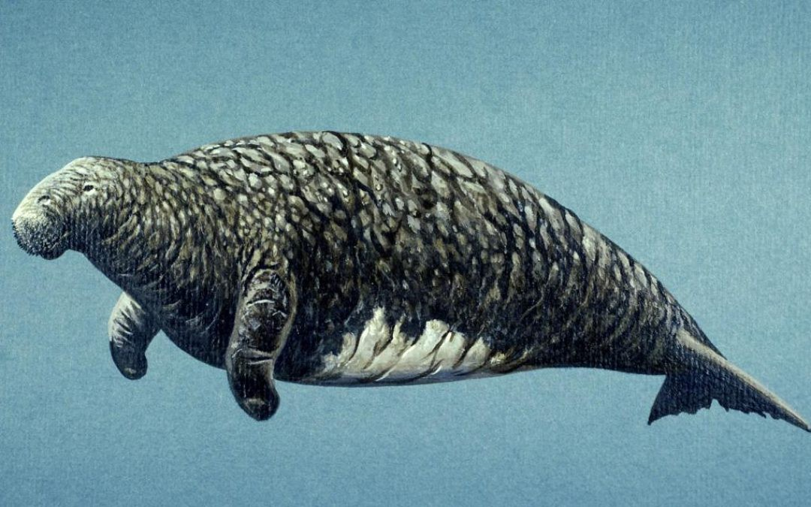
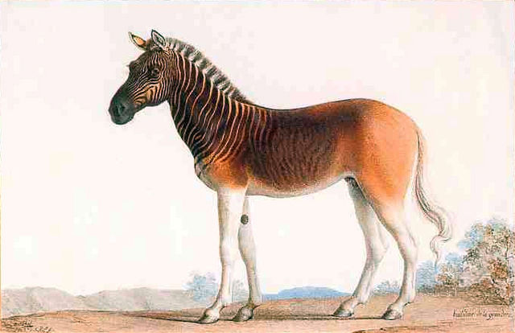
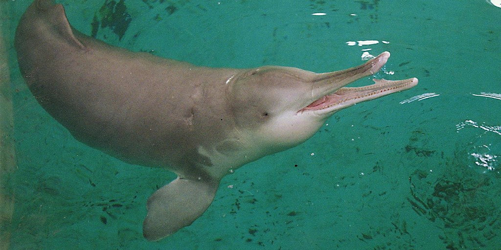

El dodo

Fue un ave, no volador que vivió en las islas de Mauricio. Se extinguió porque los viajeros de la isla, trajeron animales que no eran parte de su ecosistema. Los animales no nativos se comían los huevos de los dodos y se convirtieron en depredadores de los dodos. El dodo se confirmó extínto en el año 1662.
La vaca marina de Steller
Era un mamífero acuático, pariente del manatí que vivió en el mar de Bering, entre Alaska y Rusia. La causa de su extinción fue por la caza escesiva de su especie. La caza a este animal fue por la calidad de su carne y grasa. La vaca marina se confirmó extínta en el año 1768.
La Quagga
Era un animal originario de Sudáfrica,subespecie de las cebras. La causa de la extinción de su especie fue por la caza excesiva. Eran cazados por el comercio de su piel y carne. La Cuaga se consideró extínta en el 1883. Aunque, gracias a la ciencia han traído a este animal extínto a la vida después de 100 años de su desaparición.
El delfín del río Yangtse
Fue un mamífero acuático, que vivía en el río Yangtse. Lo que provocó su extinción fue la pesca escesiva y contaminación de las aguas en el que vivían. El animal confirmó su extinción en el año 2006.